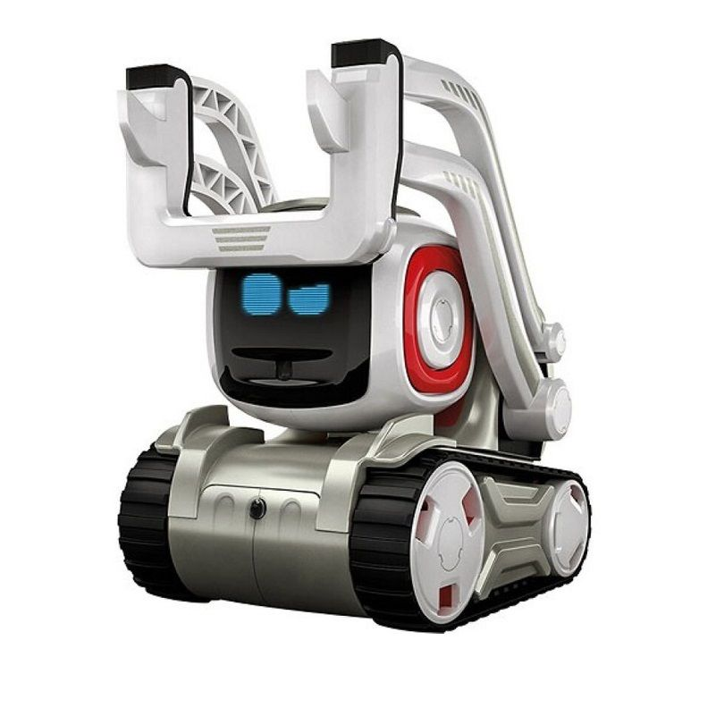
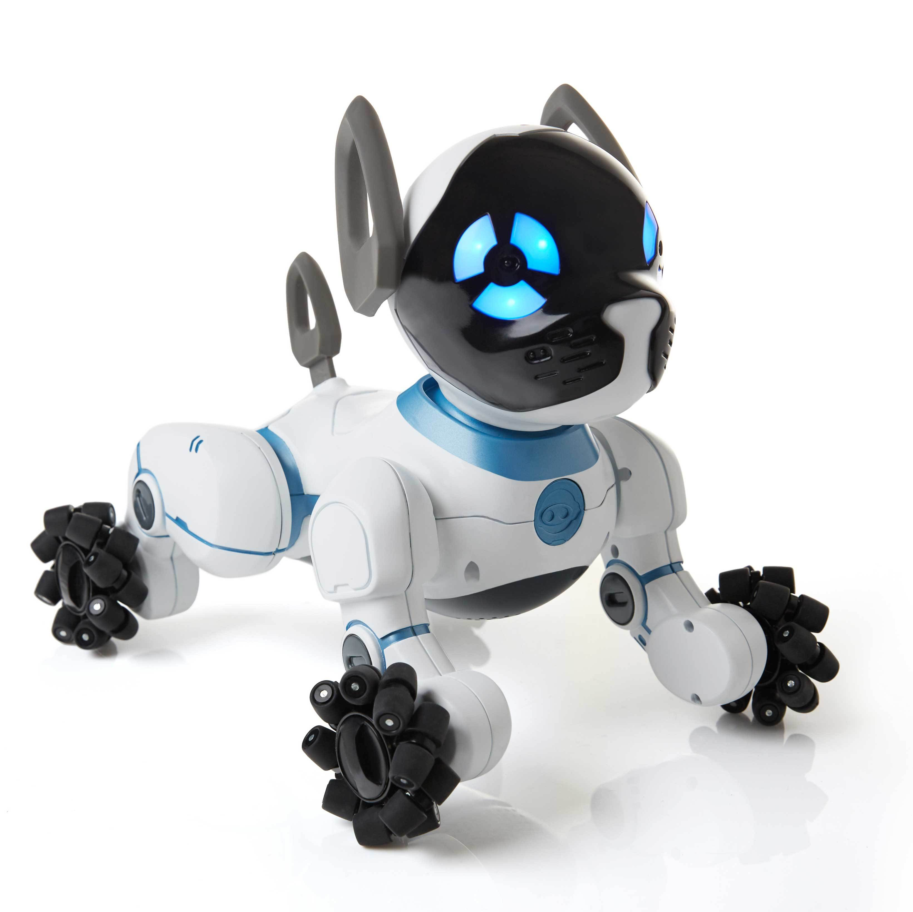
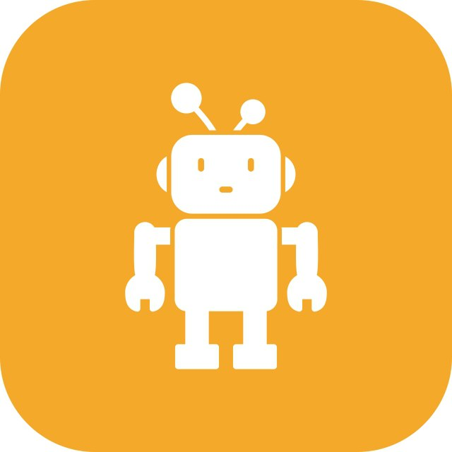

Галерея современных роботов




Современные роботы-игрушки сочетают в себе множество инновационных технологий, таких как искусственный интеллект, машинное обучение и сенсорные системы. Сегодняшние интерактивные игрушки могут реагировать на голосовые команды, запоминать действия пользователей и адаптироваться к поведению своего владельца. Такие игрушки стали не просто развлекательными объектами, но и полезными инструментами для развития детей, обучающих их основам технологий и науки в игровом формате. Например, роботы с функцией программирования позволяют детям создавать собственные алгоритмы, развивая логическое мышление и навыки решения задач.
Интерактивные роботы впервые появились в 1990-х годах. Они были простыми по конструкции, однако пользовались огромной популярностью благодаря своей способности воспроизводить звуки или выполнять базовые действия. Со временем эти игрушки стали более сложными, добавляя новые функции и возможности. Например, появились роботы, которые могли распознавать голосовые команды, выполнять различные движения, а также взаимодействовать с внешними объектами, такими как игрушечные машины или другие роботы. Это стало возможным благодаря развитию микроэлектроники и миниатюризации компонентов, что позволило создавать более компактные и функциональные устройства.
Технологии быстро развивались, и на сегодняшний день роботы-игрушки оснащены сенсорами, которые позволяют им обнаруживать препятствия, следить за движениями и даже распознавать эмоции человека. Это открывает новые горизонты для использования роботов в различных сферах, включая образование и здравоохранение. Например, роботы с функцией эмоционального интеллекта могут использоваться для работы с детьми с особыми потребностями, помогая им развивать социальные навыки. Важно отметить, что многие современные роботы могут подключаться к интернету, что позволяет им получать обновления и взаимодействовать с другими устройствами. Это делает их еще более функциональными и доступными для детей и их родителей.
Одним из ключевых трендов в развитии роботов-игрушек является их интеграция с технологиями виртуальной и дополненной реальности. Например, некоторые роботы могут взаимодействовать с виртуальными объектами, создавая уникальный игровой опыт. Это позволяет детям не только играть, но и изучать новые концепции, такие как физика, математика и программирование, в интерактивной форме. Кроме того, такие игрушки могут использоваться для обучения детей основам робототехники, что особенно важно в эпоху, когда технологии играют ключевую роль в нашей жизни.
Еще одним важным аспектом является экологичность современных роботов-игрушек. Многие производители начинают использовать перерабатываемые материалы и энергоэффективные компоненты, чтобы снизить воздействие на окружающую среду. Это особенно важно, учитывая растущий спрос на такие устройства и их популярность среди детей. Кроме того, некоторые роботы оснащены солнечными батареями, что делает их более автономными и экологически чистыми.
Будущее роботов-игрушек выглядит еще более впечатляющим. С развитием технологий искусственного интеллекта и машинного обучения такие устройства станут еще более умными и адаптивными. Например, роботы смогут анализировать поведение ребенка, предлагая ему игры и задания, которые соответствуют его уровню развития и интересам. Это сделает процесс обучения еще более персонализированным и эффективным. Кроме того, ожидается, что в ближайшие годы появятся роботы, способные взаимодействовать с другими устройствами умного дома, создавая единую экосистему для развлечений и обучения.
Однако, несмотря на все преимущества, важно помнить о балансе между использованием технологий и традиционными формами игры. Роботы-игрушки, безусловно, могут быть полезными, но они не должны полностью заменять живое общение, творчество и физическую активность. Родителям стоит внимательно подходить к выбору таких устройств, учитывая возраст и интересы ребенка, а также следить за тем, чтобы время, проведенное с роботом, не превышало разумных пределов. В конце концов, главная цель любой игрушки — это радость и развитие, а не просто развлечение.
В заключение можно сказать, что роботы-игрушки прошли долгий путь от простых механических устройств до сложных интеллектуальных систем. Они стали не только инструментом для развлечения, но и важным элементом образовательного процесса. С каждым годом их возможности расширяются, и, вероятно, в будущем мы увидим еще более удивительные и полезные модели, которые помогут детям раскрыть свой потенциал и подготовиться к жизни в мире, где технологии играют ключевую роль.
| Название | Характеристики | |
|---|---|---|
| Время работы | Функции | |
| Робот Alpha | 2 часа | Дистанционное управление |
| Робот Beta | 1.5 часа | Голосовое управление |
| Робот Gamma | 3 часа | Обучение программированию |


Роботы-игрушки начали активно развиваться в 1990-х годах. Одна из первых популярных моделей – Furby – стала хитом благодаря своей способности обучаться и адаптироваться к пользователю. Сегодняшние роботы стали гораздо более функциональными, благодаря таким технологиям, как искусственный интеллект и машинное обучение, которые позволяют им предсказывать действия и предлагать новые взаимодействия.
Современные технологии позволяют создавать роботов, которые не только развлекают, но и помогают детям изучать программирование, математику и основы инженерии. Такие игрушки способствуют развитию важных навыков и могут стать интересным и полезным дополнением к образовательному процессу, открывая перед детьми новые горизонты для творчества и изобретательства.
Особое внимание стоит уделить роботам, которые обучают детей принципам работы с искусственным интеллектом. Эти игрушки могут стать важным инструментом для детей, желающих узнать, как создаются программы и алгоритмы, а также для родителей, которые хотят внедрить новые образовательные методы в жизни своих детей.
© 2025 Современные роботы-игрушки